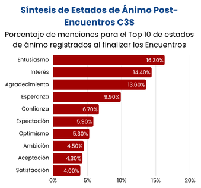

¿De qué hablamos cuando hablamos de Capital Social?
Para nosotros, el Capital Social es, en esencia, el poder que reside en las relaciones. Es el valor, tanto presente como potencial, que emerge de nuestras redes de confianza y de nuestra capacidad para cooperar en pos de un objetivo común.
A su vez, es lo que permite potenciar el valor de otras formas de capital, como el Humano o el Físico. Es a través de la conexión entre las personas que se obtiene el mayor valor posible de esos recursos.

Vino viejo en botella nueva
Como sociedad, siempre hemos valorado la confianza, la cooperación y el trabajo conjunto. La novedad es que ahora tenemos un concepto, ampliamente utilizado en distintas áreas, para referirnos a todo ello.
¿Por qué llamarlo "Capital"?
Tratarlo así nos permite entender que se puede construir, invertir, agotar o incluso perder con el tiempo. Nos permite medirlo y compararlo, algo fundamental para apoyar mejores políticas públicas, investigar y, en definitiva, ayudarnos a ser más eficaces, productivos y felices.
¿Se puede construir Capital Social?
¡Absolutamente! Y nuestra mejor herramienta es la Conversación, como nos enseñó Humberto Maturana. Conversar es más que un simple traspaso de información; es el entrecruzamiento de "lenguajear" y "emocionar" donde nos transformamos mutuamente.
El Capital Social de una comunidad se expresa y refuerza en la calidad de sus conversaciones y de la agenda conversacional que esta tenga.
“Nos salvamos juntos o nos hundimos separados”
Únete a la conversación
Ayúdanos a fortalecer el tejido social chileno a través del diálogo, la investigación y la acción colectiva.